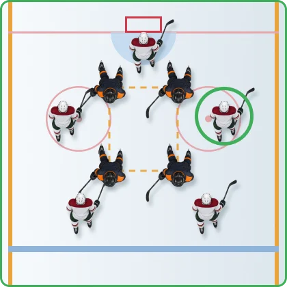
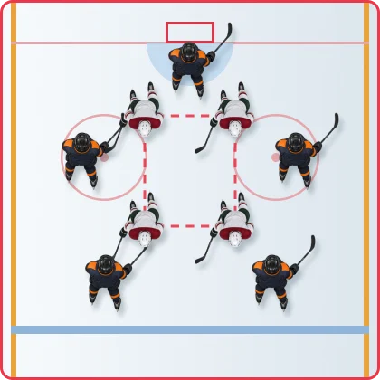
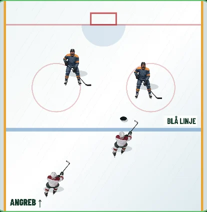
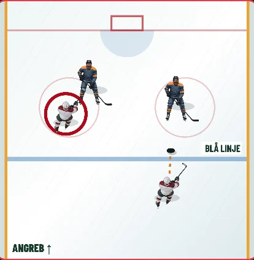
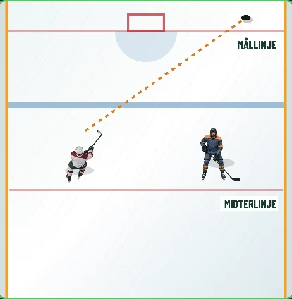
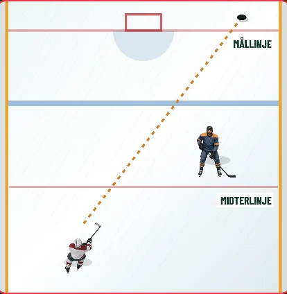
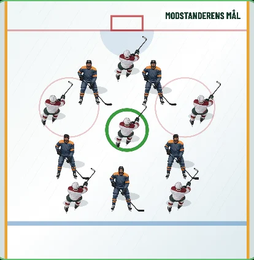
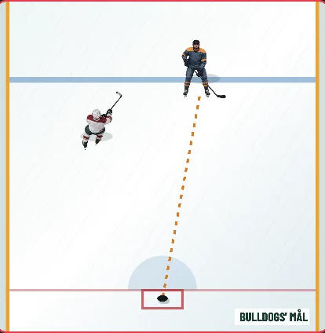

- Bulldogs
- Modstander
KAMPENS FORLØB
Emne 1 af 5
3 × 20 minutter
- 1. periode 20:00
- 2. periode 20:00
- 3. periode 20:00
Fløjt Uret stopper
Faceoff Uret kører
Står det lige? · Metal Ligaens grundspil
- 2–2 Efter 60 min. Uafgjort Ingen har vundet efter ordinær tid
- 5:00 Overtid 3 mod 3 + målmænd Første mål vinder kampen
- Stadig lige? Straffeslag Holdene skyder på skift
Kampen er 3 × 20 minutters effektiv spilletid. Uret stopper ved hvert fløjt, så en kamp varer meget længere end en time. Står det lige, spilles op til 5 min. overtid og derefter straffeslag.
Se efter Faceoff: Dommeren slipper pucken mellem to spillere, og uret kører igen.
UDVISNING
Emne 2 af 5
Powerplay og boxplay

Én markspiller mere

Én markspiller mindre
En mindre straf giver 2 min. i boksen. Holdet med en spiller mere er i powerplay, det andet hold i boxplay. Scorer powerplay-holdet, slutter straffen.
Se efter Holdet i boxplay stiller sig i en firkant – boksen – og må sende pucken helt ned uden icing.
OFFSIDE
Emne 3 af 5
Pucken først

Pucken er inde først

Angriber inde før pucken
Pucken skal som hovedregel ind over den blå linje før angriberne. Kommer en angriber ind i zonen for tidligt, kan der dømmes offside.
Se efter Ved forsinket offside løfter linjedommeren armen. Angriberne skal ud af zonen igen.
ICING
Emne 4 af 5
Skudt helt ned

Skudt fra anden halvdel

Skudt fra egen halvdel
Skydes pucken fra egen halvdel over modstanderens mållinje, uden at nogen rører den, kan der dømmes icing. Hold i boxplay må gerne.
Se efter Linjedommeren vurderer, hvem der når pucken først. Vinder angriberen, kan icing vinkes af.
TOM KASSE
Emne 5 af 5
Målmanden ud

6 mod 5: én angriber mere

Eget mål er tomt
Er Bulldogs bagud til sidst, kan træneren tage målmanden ud og sende en ekstra markspiller på isen. Flere angribere, men et tomt mål.
Se efter Kører målmanden mod bænken i de sidste minutter, skal der udlignes nu.